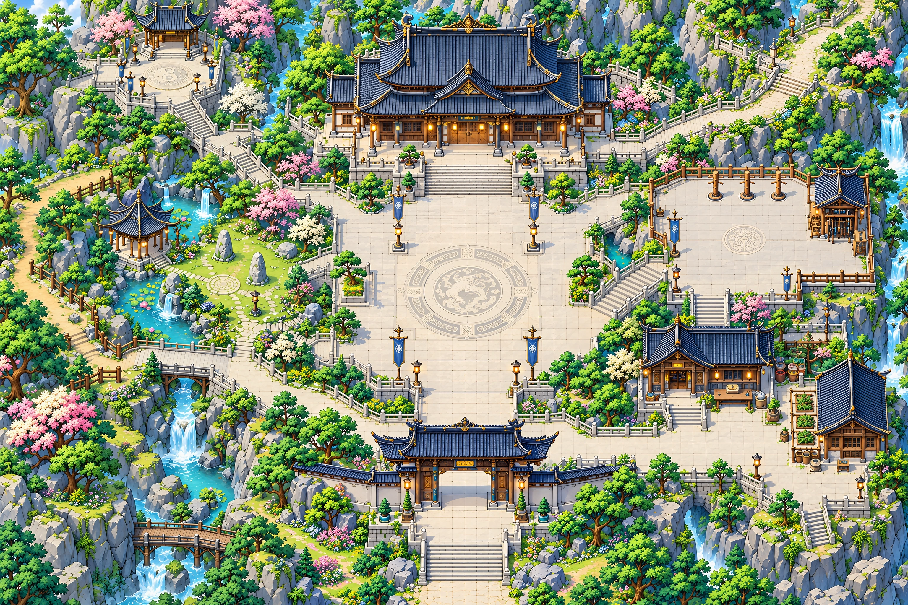

VÂN HẢI ĐẠO ĐỒ / HẰNG NHẠC NHẬP MÔN
Ngoại viện trên biển mây
Concept 01 · Đá ngọc, đồng cổ, tùng và linh vụ — cùng thế giới với Tiên môn.
Đang tải concept…Chạm: đặt mẫu người · Kéo: xem vùng khác · Không kiểm va chạm
Không khí môn phái
Kiến trúc cổ đứng trên vân nhạc. Bình minh làm điểm nhấn; bóng đá và tùng giữ màu xanh trầm để nhân vật, kỹ năng và trang bị đọc rõ.
Bóng xanh trầmĐá ngọc xámĐồng cổMây ngà
- Trận pháp chìm và sân thoáng làm trục thị giác.
- Tùng, rêu và đá phong hóa nối các khu với núi.
- Mây ở rìa vực; đường, cầu và bậc thang cần đọc rõ.
Luồng nhập môn để xây
- Tiếp dẫn và chuẩn bị tại ngoại viện — HN01.
- Thổ nạp ở đài bên trái — HN02/M01.
- Luyện thuật, ngắm và né ở sân bên phải — HN03–HN04.
- Quay về chuẩn bị trước khi đi ngoại vi riêng — hướng HN05.
Khu môn phái dành cho nhiệm vụ, tu luyện, chuẩn bị và gặp người khác. Farm và khảo nghiệm giữ scene riêng; chưa có portal mới trong bản này.
Hai nguồn đối chiếu

Ảnh concept gốc 1536 × 1024. Cách xem 1× dùng world dự kiến 3072 × 2048 và sprite 64 × 96, chân (32,88) để ước lượng tỷ lệ; ảnh đang được phóng 2×, chưa chứng minh chi tiết native hoặc khớp footprint. Cần vẽ từng khu, căn/ghép và kiểm trước khi thay nền. Chú thích là điểm nhìn biên tập, không phải NPC, vùng chặn hay cổng thật. Map owner và runtime được giữ nguyên.